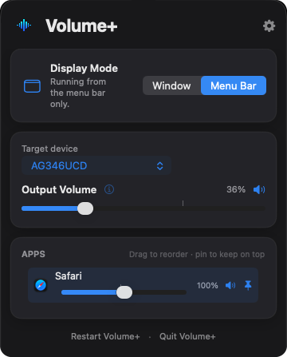

Volume+
A volume slider for every app on your Mac. Turn a noisy app down without touching your music, boost quiet ones past 100%, and finally get working volume keys on monitor speakers.

The volume controls macOS should have had.
Per-app volume
Every app playing sound gets its own slider and mute button — turn down a video call, a game or a browser tab independently.
Boost up to 200%
Quiet video or a soft-spoken podcast? Push any single app past 100% without cranking everything else.
Volume for monitor speakers
Speakers in monitors and TVs over HDMI or DisplayPort usually ignore the volume keys. Volume+ gives them a working volume control.
Your volume keys, working
On speakers with no volume control of their own, the keyboard volume and mute keys adjust Volume+ instead.
Menu bar or window
Run it as a normal window with a Dock icon, or tucked away in the menu bar. Switch any time.
AirPods auto-switch
Connect AirPods or other Bluetooth audio and Volume+ follows. Pin and reorder apps so your favourites stay at the top.
Up and running in a minute.
Download
Download the .dmg and open it from your Downloads folder.
Drag to Applications
Drag Volume+ onto the Applications folder shortcut, then eject the disk image.
Open it
Open Volume+ from Applications. The first time, macOS asks if you're sure — click Open.
Allow two permissions
Setup walks you through System Audio Recording and Input Monitoring. That's it.
Everything stays on your Mac.
macOS calls Volume+'s main permission “System Audio Recording”, which sounds alarming. Here's what it actually means.
Nothing is recorded
Each app's audio is adjusted live and played straight back out. It's never saved, stored or kept.
Your microphone is never used
Volume+ only works with sound your apps are already playing. It never asks for or touches the microphone.
No data collected
No accounts, analytics or tracking. Volume+ doesn't collect or send anything anywhere.
The recording dot is normal
macOS shows a recording indicator in the menu bar while Volume+ is adjusting app volumes. That's expected for this permission.
Good to know.
Why isn't it on the App Store?
Changing other apps' volume needs system-level audio access that the Mac App Store doesn't permit. Volume+ is still signed with my Apple Developer ID and notarized by Apple — Apple's own security check for apps distributed outside the App Store.
Is it really free?
Yes — no trial, no ads, no in-app purchases. If it's useful to you, you can buy me a coffee on Ko-fi.
Why does it say to set my speakers to 100%?
Volume+ adjusts volume in software. Setting your speakers or monitor to full gives it the whole range to work with, then you control the level from Volume+.
How do I uninstall it?
Quit Volume+ from its menu, then drag it from Applications to the Bin. If you turned on Launch at Login, turn it off in Volume+'s settings first.
Volume+ 1.0
Released 12 October 2026- First public release.
- Per-app volume and mute, with up to 200% boost.
- Software output volume and volume-key support for speakers without hardware volume.
- Menu bar and window modes, Bluetooth auto-switching, launch at login and colour themes.
VolumePlus-1.0.dmg · SHA-256 a8dde8ac728239931d2aa3663d83a22d52b526e829dd267cfb5f0b10755b1e2f
Enjoying Volume+?
It's free, and always will be. A coffee helps keep it going.